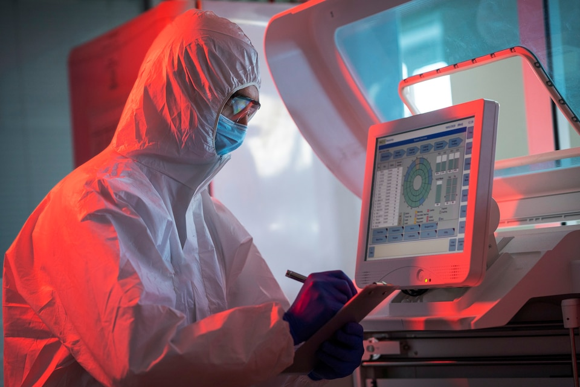
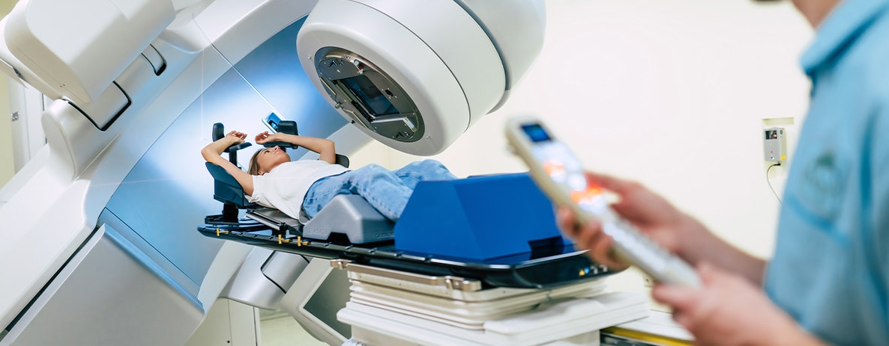
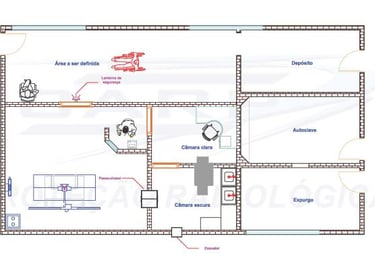
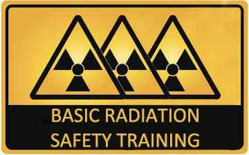

Nossos Serviços
Oferecemos soluções completas em proteção radiológica e física médica com tecnologias avançadas e profissionais especializados.

Assessoria em Proteção Radiológica
Avaliação e análise de riscos radiológicos: Diagnóstico completo dos riscos presentes em ambientes radiológicos, identificando pontos críticos e oportunidades de melhoria.
Desenvolvimento e implementação de programas de radioproteção: Criação de programas personalizados que atendem às necessidades específicas da sua instituição, garantindo conformidade regulatória.
Auditorias e inspeções de segurança radiológica: Verificações periódicas para garantir a manutenção dos padrões de segurança e identificar necessidades de ajustes.
Treinamento e capacitação de equipe em radioproteção: Programas educacionais contínuos para manter sua equipe atualizada com as melhores práticas da indústria.

Controle de Qualidade de Equipamentos
Testes e avaliações de equipamentos radiológicos: Realização de testes técnicos abrangentes para garantir o funcionamento adequado e a segurança dos equipamentos.
Calibração e manutenção preventiva de equipamentos: Serviços de calibração precisos e programas de manutenção preventiva para prolongar a vida útil dos equipamentos.
Garantia de conformidade com padrões regulatórios: Asseguramento de que todos os equipamentos atendem aos padrões internacionais e regulamentações locais vigentes.

Cálculo de Blindagem e Levantamento Radiométrico
Avaliação e dimensionamento de blindagens radiológicas: Cálculos precisos para determinar a espessura e tipo de blindagem necessária em diferentes ambientes.
Levantamentos radiométricos para análise de exposição à radiação: Medições detalhadas de níveis de radiação para avaliar a exposição e identificar áreas de risco.
Implementação de medidas corretivas e preventivas: Desenvolvimento e execução de planos de ação para minimizar riscos e garantir a segurança contínua.

Treinamento e Capacitação
Cursos e workshops sobre proteção radiológica: Programas educacionais abrangentes que cobrem todos os aspectos da proteção radiológica e segurança em ambientes médicos.
Treinamento de operadores de equipamentos radiológicos: Capacitação especializada para operadores, garantindo o uso seguro e eficiente dos equipamentos.
Educação continuada em segurança e saúde ocupacional: Programas de atualização contínua para manter profissionais informados sobre novas regulamentações e melhores práticas.
Consultoria Especializada
Orientação técnica em projetos de instalações radiológicas: Suporte especializado desde o planejamento até a implementação de novas instalações radiológicas.
Análise de documentação e processos regulatórios: Revisão completa de documentação e processos para garantir conformidade com regulamentações vigentes.
Suporte em casos de emergência e situações críticas: Assistência imediata e especializada em situações de emergência ou quando surgem problemas críticos relacionados à radiação.